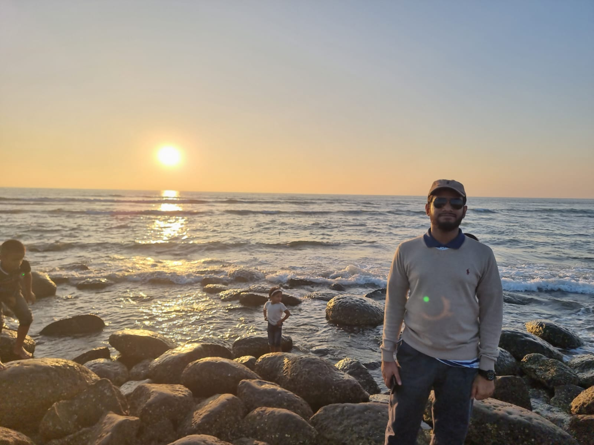

I started with ships. At the Bangladesh University of Engineering and Technology (BUET), I learned to design vessels from the keel up — hydrostatics, stability, propulsion, the whole discipline of making steel float and move efficiently. My thesis took that further: a numerical study of semi-submersible platforms in the Bay of Bengal.
But somewhere between the lines plans and the load calculations, I discovered I was equally drawn to the business of building things — why a product succeeds, how a supply chain holds together, what makes a team deliver. That curiosity took me to a Post Graduate Diploma in Supply Chain Management (ISCEA) and an Executive MBA in Marketing at the University of Dhaka, which I completed in 2026 with a CGPA of 3.75.
Today, at Tech Marine Solutions Ltd., both halves of my training work together. I've helped launch the Vikings Boat brand — designing the factory layout as an engineer; running the market research, costing, digital marketing, and SEO as a marketer; and coordinating the IT team that delivered the Vikings Boat and HML partner websites.
Outside work, I hold DELF A1, A2, and B1 in French, served as class representative for five MBA courses, volunteer with BADHON at BUET, and host an occasional podcast about how Bangladeshi society is changing.